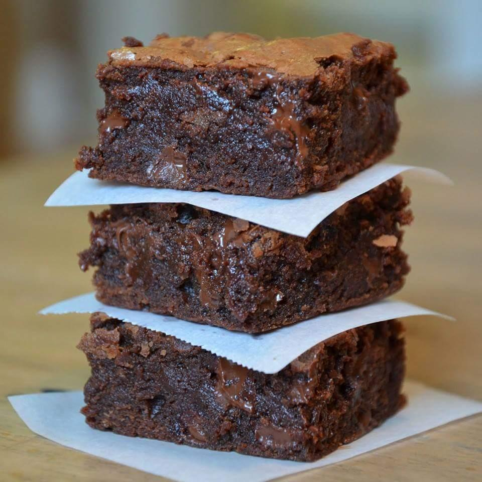

Quick and Easy Brownies

Description:
A quick and easy Brownie recipe. Yields 20 servings
Ingredients:
- 1 cup butter, melted
- 2 cups white sugar
- ½ cup cocoa powder
- 1 teaspoon vanilla extract
- 4 eggs
- 1 ½ cups all-purpose flour
- ½ teaspoon baking powder
- ½ teaspoon salt
- ½ cup walnut halves
Steps:
- Preheat the oven to 350 degrees F (175 degrees C). Grease a 9x13-inch pan.
- Combine the melted butter, sugar, cocoa powder, vanilla, eggs, flour, baking powder, and salt. Spread the batter into the prepared pan. Decorate with walnut halves, if desired.
- Bake in preheated oven for 20 to 30 minutes or until a toothpick inserted in the center comes out with crumbs, not wet. Cool on wire rack.